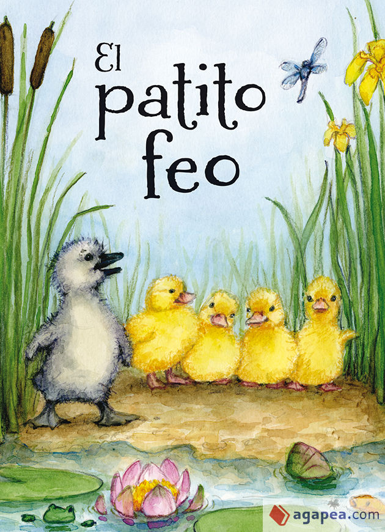

El Patito Feo
Autor: Hans Christian Andersen.
El cuento ha tenido diversas adaptaciones y versiones para opera, musical y peliculas animadas. El argumento es propio de Andersen, sin referencias a otros cuentos de hadas, tradiciones o folclore; en este cuento sintetiza los periodos principales de su vida.
El patito feo se ha convertido en una expresión que se aplica a cualquier situacion o persona, que de principio es rechazada o mal vista, y despues sorprendentemente se convierte en algo inesperado y mucho mejor.
